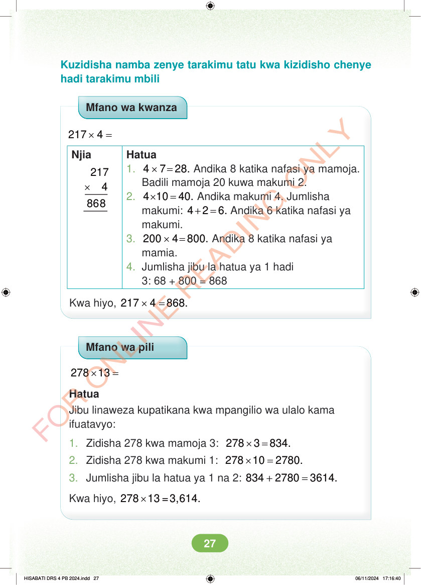

Kuzidisha namba zenye tarakimu tatu kwa kizidisho chenye hadi tarakimu mbili Mfano wa kwanza × = 217 4 Njia × 217 4 Hatua 1. × = 4 7 28. Andika 8 katika nafasi ya mamoja. Badili mamoja 20 kuwa makumi 2. 2. × = 4 10 40. Andika makumi 4. Jumlisha makumi: + = 4 2 6. Andika 6 katika nafasi ya makumi. 3. × = 200 4 800. Andika 8 katika nafasi ya mamia. 4. Jumlisha jibu la hatua ya 1 hadi 3: 68 + 800 = 868 Kwa hiyo, × = 217 4 868. Mfano wa pili × = 278 13 Hatua Jibu linaweza kupatikana kwa mpangilio wa ulalo kama ifuatavyo: 1. Zidisha 278 kwa mamoja 3: × = 278 3 834. 2. Zidisha 278 kwa makumi 1: × = 278 10 2780. 3. Jumlisha jibu la hatua ya 1 na 2: + = 834 2780 3614. Kwa hiyo, × 278 13 =3,614. HISABATI DRS 4 PB 2024.indd 27 HISABATI DRS 4 PB 2024.indd 27 06/11/2024 17:16:40 06/11/2024 17:16:40